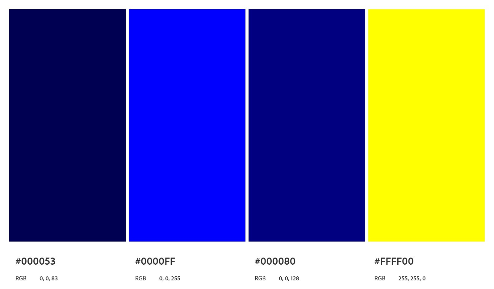

Luau
Luau é um garoto de 10 anos que vivia uma vida simples, morando a vida toda na favela da São Jorge com seu irmão Fieal, ele desenvolvia suas habilidades de luta com espadas para defesa pessoal e em prol daquilo que ele achava justo, mas sendo uma criança, nem sempre era o mais correto a se fazer, mas ainda está em fase de crescimento.
Seus poderes são herdados de seu pai, uma pedra criada pelo próprio Deus que se encotra na sua nuca, dessa pedra vem seus poderes, como retirar sua arma (espada) e outras habilidades. Por mais que essa pedra seja muito bonita, parecendo que o próprio universo está dentro dela, Luau não gosta de mostra-la, ele se sente bem envergonhado de mostrar, nem tocar ele deixa.
Após uma decisão arriscada de seu irmão, Luau e Fieal fogem da casa de seu tio para buscarem uma vida melhor, enfrentando os perigos e dificuldades das ruas de São Paulo. O objetivo é chegar a casa antiga que seus pais moravam, mas Fieal era muito pequeno e não tinha certeza do local e nem se alguém ainda morava lá, se não tivesse, teriam que ficar nas ruas por um longo tempo
Paleta de Cores

A paleta de cores foi extraida do site oficial da Adobe Color, utilizando as ferramentas de acessibilidade para daltônicos.